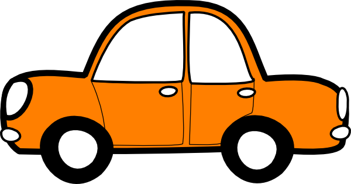

Budgets for the Apocolypse 1 Month in
Food
- Milk - $0.28
- Bread - $0.82
- Rice - $0.50
- Eggs - $0.70
- Cheese - $1.70
- Chicken - $1.32
- Beef - $2.33
- Apples - $1.72
- Bananas - $0.69
- Oranges - $1.17
- Tomato - $0.88
- Potato - $0.70
- Onion - $0.28
- Lettuce - $0.40
- Day Total - $13.49
- Month Total - $418.19
I would probably spend around $418 on food during one month assuming I buy about the same type of stuff listed above. This would leave me with $782 left over for the rest of the month.
Rent
For rent it would depend on if I was still living with my parents or was in some apartment somewhere. If living with parents there wouldn't really be any money going towards it. However, if rent was necessary a sizeable amount of money from the $1200 would go to it because rent for a single month is very expensive in some places. I will assume rent will be $750 of the remaining dollars. While this might not pay for all of it hopefully there would be some sort of other income or money already saved.
Gas
Not a lot of money would be spent on gas money for a car because most work has been cancelled at most places so I would only need to drive to the grocery store. Assumming the car has a similar mpg as the average car in the U.S. the mpg is 25mpg. Lets also assume the nearest grocery store is 10 miles away. We would use 0.8 gallons per round trip. If we only have to go twice the month at 3 dollars per gallon we would only need $2.4 on gas. This would leave the total at $29.5 left which would probably be saved or used for other unnecessary items.